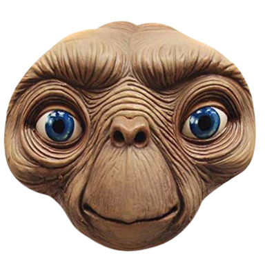

E.T.

Standing near the spaceship, E.T.'s heart glows as he prepares to return home. Mary, Gertie, and "Keys", a friendly government agent, show up. E.T. says goodbye to Michael and Gertie, as she presents him with the chrysanthemum that he had revived. Before boarding the spaceship, he embraces Elliott and tells him "I'll be right here", pointing his glowing finger to Elliott's forehead. He then picks up the chrysanthemum, boards the spaceship, and it takes off, leaving a rainbow in the sky as everyone watches it leave.